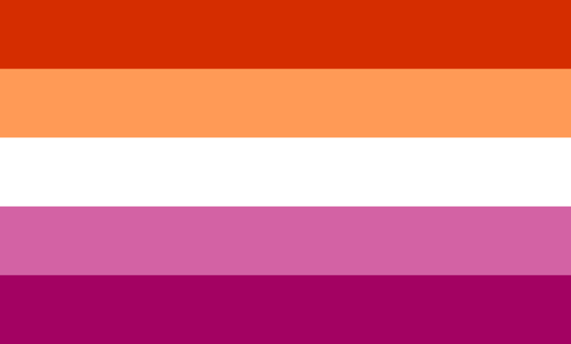

The Best Lesbian Media
This is a list of the subjectively best lesbian media. Note that I exclusively consume
anime-adjacent media, so don't expect to see anything else. The list is ordered from best to worst,
but I recommend everything in this list.